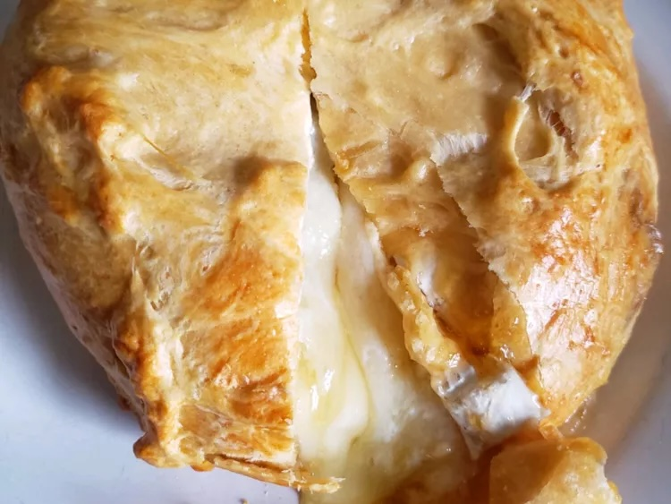

Baked Brie

Description
This Brie cheese recipe wraps a whole wheel of Brie cheese filled with preserves in puff pastry. It's baked until the pastry is golden and crisp and Brie is warm and gooey inside for a cheesy treat.
Ingredients
- 1 (8 ounce) wheel Brie cheese
- 3 tablespoons apricot or peach preserves
- 1 sheet frozen puff pastry, thawed
- 1 egg white
Steps
- Step 1: Preheat the oven to 350 degrees F (175 degrees C). Lightly grease a baking sheet or line with parchment paper.
- Step 2: Slice Brie cheese wheel in half so you have 2 circles of cheese. Spread preserves on the cut side of one circle of Brie; arrange remaining circle of Brie rind-side up on top.
- Step 3: Wrap the entire wheel of Brie with one sheet of puff pastry; transfer onto the prepared baking sheet seam-side down. Brush puff pastry with egg white.
- Step 4: Bake in the reheated oven until pastry in golden brown, about 30 minutes. Serve immediately.